1 Batch normalization backpropagation
We explain the batch normalization backpropagation, related to the cs231n course assignment (the so
called alternative form).
The batch-norm layer forward pass is given by
where a,b = 1,..,D are the feature indices, i,j,k = 1,...,N are the batch samples, and
|  ai = 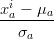, μa = 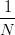∑
i=1Nx
ai, σ
a = 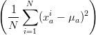1∕2. ai = 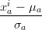, μa = 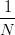∑
i=1Nx
ai, σ
a = 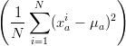1∕2. | | |
Backpropagating Dai ≡ dout
ai, we need to compute
| dxai | = ∑
b,jDbj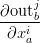 = ∑
b,jDbjγ
b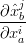 | |
|
| = ∑
b,jDbjγ
b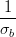δab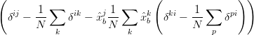 | |
|
| = ∑
jDajγ
a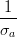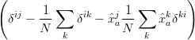 | |
|
| = 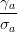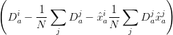 = 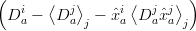, | | |
where 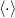j represents an average with respect to the j index. The three terms on the second line come
from the derivatives w.r.t x, μ and σ respectively.